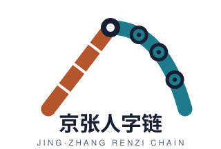

总体概念：人字链——1909年京张铁路「人字形展线」（詹天佑）为文化原点，「人」=人才＋人本，「链」=创新链＋站点链。空间结构：一脊（京张遗址公园活力脊）· 三链节（众智园「研」、原点社区「创」、大钟寺「业」）· 双翼（中关村科技服务翼、小月河场景赋能翼）· 一网（14个AI场景节点网络）。
图面详见 assets/figures/site-overview.png 与 drawings/a3-booklet.pdf（P04）、a0-boards.pdf（Board 1）。
| 层级 | 范围 | 面积（官方约值） | 几何状态 |
|---|---|---|---|
| 统筹研究范围 | 北五环—京藏高速—西直门外大街—万泉河路 | 约43.6 km² | 文字四至（无polygon） |
| 总体设计范围 | 京张遗址公园周边1—2公里城区与产业区 | 约11.4 km²（本包复算约1141公顷） | PROV-SITE-001（provisional） |
| 重点区域范围 | 众智园＋原点社区＋大钟寺 | 约368.4公顷 | PROV-KEY-001/002/003（provisional） |
传导逻辑：产业战略（43.6km²）→ 总体城市设计（11.4km²）→ 重点片区详细设计（368.4公顷）。
| 链节 | 区域 | 面积（复算） | 定位 |
|---|---|---|---|
| 研 | 众智园AI自主创新加速区 | 约192.1公顷（临时边界复算约192.9） | AI全栈自主创新＋治理话语权 |
| 创 | 北京AI原点社区 | 104公顷 | 世界级AI创新生态＋人才活力 |
| 业 | 大钟寺AI产业聚集区 | 72公顷 | 智能原生新业态＋产业转化 |
三区面积均为临时粗略边界复算值；详见 proposal.md「重点区域详细设计」。
| 代码 | 类别 | 面积 | 占比 |
|---|---|---|---|
| 0802 | 科研用地 | 215公顷 | 18.9% |
| 05 | 商业服务业用地 | 92公顷 | 8.1% |
| 0701 | 城镇住宅用地 | 294公顷 | 25.8% |
| 0804 | 教育用地 | 62公顷 | 5.5% |
| 0803 | 文化用地 | 21公顷 | 1.8% |
| 1207 | 道路用地 | 154公顷 | 13.5% |
| 1401 | 公园绿地 | 218公顷 | 19.1% |
| 1402 | 防护绿地 | 39公顷 | 3.4% |
| 16 | 留白用地 | 46公顷 | 4.0% |
拓扑安全分区：覆盖全部提交边界、无重叠、相邻地块共享边界坐标（geometry/land_use.geojson）。
| 要素 | 概念方案 |
|---|---|
| 路网骨架 | 五横两纵（西直门外大街/北三环/成府路/清华东路/北五环辅路 × 学院路—西土城路/荷清路） |
| 轨道一体化 | 五道口、大钟寺（13/12号线）、清华东路西口（15号线）、清河站（13/昌平线/京张高铁）＋预留众智园站（概念）；四象限步行连通 |
| 慢行系统 | 活力脊步行脊＋小月河滨水骑行道＋学院路绿廊；断点缝合为深化方向 |
| 停车组织 | 站点「停车换乘＋非机动车集中停放」节点（概念） |
路网/轨道/水系为概念位置（geometry/roads.geojson、constraints.geojson），不代表红线或工程线位。
| 要素 | 概念方案 |
|---|---|
| 蓝绿骨架 | T形：京张活力脊（纵向，约218公顷公园绿地）＋清河滨水带（概念横臂）＋小月河第二纵廊（概念） |
| 公共广场 | 8处概念广场（大钟寺四象限、学院路街角、北三环智汇、五道口枢纽、清华园原点、清华科技园、众智园、活力脊北端绿地广场（清河滨水带概念位置）） |
| 朝圣地标 | 4处：京张零号站（概念命名）、人字桥廊、众智之心、钟声数据钟楼 |
| 荣誉展示 | 带级人字链荣誉墙／链节级开发者星轨／项目级作品陈列＋公共空间组件库 |
| 指标 | 值 | 说明 |
|---|---|---|
| 概念建筑基底 | 22公顷 | geometry/buildings.geojson（示意布局） |
| 概念建筑密度 | 1.9% | 非控规指标 |
| 概念总建筑面积 | 206万平方米 | 基底×层数估算 |
| 概念最大高度 | 57米 | 设计假设量级，非高度管控结论 |
| 拆改留 | 新建约60%/改造约24%/保留约16%（概念示意） | renewal_class 属性；需现状普查修正 |
| 编号 | 项目 | 位置 | 类型 |
|---|---|---|---|
| U01 | 原点广场＋开源工坊更新 | 原点社区 | 公共空间/社区 |
| U02 | 清华园车站文化区活化 | 原点社区 | 文化更新 |
| U03 | 五道口商圈体验化改造 | 原点社区 | 商业更新 |
| U04 | 清华科技园周边开放化 | 原点社区 | 科研园区更新 |
| U05 | 大钟寺四象限步行连通 | 大钟寺 | 交通/公共空间 |
| U06 | 具身智能中试载体 | 大钟寺 | 产业载体更新 |
| U07 | 数据要素服务空间 | 大钟寺 | 产业服务 |
| U08 | 学院路「AI橱窗」界面整治 | 学院带 | 街道更新 |
| U09 | 众智园中央科技广场 | 众智园 | 公共空间新建 |
| U10 | 众智园实验室复合塔楼 | 众智园 | 产业载体新建 |
| U11 | 五环上跨节点地标 | 活力脊北端 | 景观构筑 |
| U12 | 清河滨水体验带 | 活力脊北端 | 蓝绿更新 |
| U13 | 人才公寓与社区服务补位 | 安居带 | 居住配套 |
| U14 | 小月河场景沙盒基地 | 场景翼 | 场景设施 |
全部为概念建议，不构成已确定实施安排（proposal.md「更新项目清单、实施政策与分期计划」）。
| 画像 | 身份 | 核心需求 | 对应空间 |
|---|---|---|---|
| P1 研究员 | 高校/院所科研人员 | 实验室开放、跨校合作、成果转化 | 原点社区东翼、众智园实验室组团 |
| P2 创业者 | 初创团队创始人 | 低成本启动、场景验证、融资对接 | 五分钟创业环、小月河沙盒 |
| P3 开发者 | 开源社区成员 | 24小时工位、社区活动、代码托管 | 原点广场开源工坊 |
| P4 投资人/服务者 | 资本与科技服务人员 | 路演、尽调信息、要素撮合 | 中关村科技服务翼联络点 |
| P5 居民 | 既有社区居民 | 生活便利、AI服务可信可退、公共空间品质 | 人才安居带、15分钟AI服务圈 |
| P6 全球访客 | 国际人才与游客 | 文化体验、AI体验、国际服务 | 活力脊、朝圣地标 |
| P7 青年学子 | 在校本硕博/国际学生 | 开源参与、实验室机会、实习竞赛 | 原点社区、众智园实验室组团 |
| P8 垂直行业专业用户 | 教师/医生/律师/数字化负责人 | 行业AI工具试用、专业咨询、场景申报 | 学院路教育带、服务翼联络点 |
| 编号 | 场景 | 属性 | 空间锚点 | 运行数据边界 | 人工复核 |
|---|---|---|---|---|---|
| SC-01 | 算力之芯·公共算力可视化 | 测试验证 | 众智园科技广场 | 聚合调度指标，无个人数据 | 月度数据治理复核 |
| SC-02 | AI治理沙盒 | 测试验证 | 众智园治理组团 | 申报企业脱敏数据集 | 治理委员会准入评审 |
| SC-03 | 具身智能中试场 | 测试验证 | 大钟寺产业组团 | 中试过程数据，授权使用 | 安全评估＋保险机制 |
| SC-04 | 数据要素流通试验床 | 测试验证 | 大钟寺链节 | 公开/授权脱敏数据 | 数据治理委员会逐项评审 |
| SC-05 | 原点开源工坊 | 体验运营 | 清华园站前原点广场 | 社区公开数据 | 社区自治规则与内容合规审查 |
| SC-06 | 五道口AI体验街 | 体验运营 | 五道口商圈 | 体验设备合规数据 | 设备合规审查 |
| SC-07 | 京张文化AI导览 | 体验运营 | 京张活力脊全程 | 公开历史文献 | 文化专家审定 |
| SC-08 | AI+交通慢行评估 | 体验运营 | 全带 | 公开道路资料＋人工调研 | 规划交通专业复核 |
| SC-09 | AI健康服务导航 | 服务赋能 | 学院路教育医疗带 | 公开服务信息 | 专业机构校核 |
| SC-10 | 企业服务协办 | 服务赋能 | 中关村科技服务翼 | 公开政策与服务信息 | 人工顾问复核 |
| SC-11 | 低速机器人配送 | 服务赋能 | 大钟寺链节与安居带 | 配送运营数据（试点） | 主管部门试点评审 |
| SC-12 | 公共安全运营复核 | 服务赋能 | 全带公共空间 | 聚合数据，不个体识别 | 24小时人工值班复核 |
| SC-13 | 学院路AI教育共创站 | 服务赋能 | 学院路教育带 | 不采集未成年人个体数据，学情仅聚合统计 | 教研专家与教育部门评审 |
| SC-14 | 西土城路AI法律服务站 | 服务赋能 | 西土城路法律服务带 | 公开法规/授权脱敏文本，不长期留存 | 执业律师人工复核 |
每张场景卡在 proposal.md 中完整展开（含运营主体与风险）；隐私边界：公共空间AI仅用聚合脱敏数据、不个体识别、全部可人工接管。
| ID | 任务 | 状态 |
|---|---|---|
| 1.3.1 | 构建世界级AI创新生态体系 | 覆盖 |
| 1.3.2 | 建设适配AI新质生产力的新型城市形态 | 覆盖 |
| 1.3.3 | 打造全球AI创新人才向往的高品质城区 | 覆盖 |
| 1.4.1 | 统筹研究范围 | 覆盖 |
| 1.4.2 | 总体设计范围 | 覆盖 |
| 1.4.3 | 重点区域范围 | 覆盖 |
| 1.5.1.1 | 统筹研究范围：AI创新生态体系 | 覆盖 |
| 1.5.1.2 | 统筹研究范围：未来城市形态 | 覆盖 |
| 1.5.2.1 | 总体设计范围：产业目标与功能布局 | 覆盖 |
| 1.5.2.2 | 总体设计范围：城市更新总体框架 | 覆盖 |
| 1.5.2.3 | 总体设计范围：交通轨道市政配套 | 覆盖 |
| 1.5.2.4 | 总体设计范围：京张遗址公园活力带 | 覆盖 |
| 1.5.2.5 | 总体设计范围：城市风貌 | 覆盖 |
| 1.5.3.required | 重点区域详细设计（必选项） | 覆盖 |
| 1.5.3.1 | 众智园AI自主创新加速区 | 覆盖 |
| 1.5.3.2 | 北京AI原点社区 | 覆盖 |
| 1.5.3.3 | 大钟寺AI产业聚集区 | 覆盖 |
| 1.5.4 | 自选区域范围场景设计（本方案自愿响应：AI+教育/AI+法律） | 覆盖 |
| agent.1 | 一带总体概念与功能统筹方案设计 | 覆盖 |
| agent.2 | AI全栈自主创新体系与世界级AI创新生态设计 | 覆盖 |
| agent.3 | AI+场景赋能新范式与智能化AI活力城市设计 | 覆盖 |
| agent.4 | AI公共空间、智能原生新业态与朝圣地标设计 | 覆盖 |
| agent.5 | 百年京张文化、中关村文化与AI新文化融合叙事设计 | 覆盖 |
| agent.6 | 一带全球AI创新活动体系与长期运营设计 | 覆盖 |
对应 compliance_matrix.json；另以 standard_matrix.json（7项标准）与 design_depth_matrix.json（15项深度项）构成专业证据链。
| 检查 | 说明 | 结果 |
|---|---|---|
| BOUNDARY_TRUST | 临时粗略边界如实披露（provisional_constraint） | pass |
| KEY_AREAS_TRUST | 三处重点区为临时粗略范围，待官方polygon | pass |
| LAND_USE_TOPOLOGY | 用地分区拓扑安全：全覆盖、无重叠、共享边界 | pass |
| GEOJSON_SCHEMA | GeoJSON 结构符合 site-package 模式 | pass |
| GEOMETRY_VALIDITY | 几何有效、闭合、位于边界内 | pass |
| METRICS_RECALC | 指标自 geometry 在 EPSG:4548 复算一致 | pass |
| VISUAL_STATIC | 离线静态页面，无远程资源 | pass |
| PROFESSIONAL_EVIDENCE | 标准/深度/几何/指标引用完整 | pass |
四类校验（确定性/空间/可视化封装/专业证据）全部PASS；provisional边界警示如实披露，官方polygon发布后统一重算。
| ID | 说明 | 可用性 |
|---|---|---|
| OFFICIAL-ANNOUNCEMENT | 官方资格预审公告（三层范围/重点区/设计任务） | formal可用 |
| AGENT-TASKBOOK | 智能体开源征集任务书（六项任务/共创原则） | 用户提供清权 |
| SITE-PACKAGE | site-package（brief/enums/standards/schemas） | formal可用 |
| SOURCE-REGISTRY | 公开资料登记表 data/source_registry.json | formal可用 |
| PROVISIONAL-BOUNDARIES-2026 | 临时粗略边界 provisional_boundaries.geojson | 仅provisional |
| THREE-AREAS-WINGS | 「三区两翼」打造世界级AI集聚地（背景） | 背景资料 |
| HAIDIAN-1X1 | 海淀「1+X+1」产业体系布局（背景） | 背景资料 |
| MOHURD-URBAN-DESIGN-MEASURES | 城市设计管理办法（住建部令35号） | formal可用 |
| MOHURD-CONTROL-DETAILED-PLANNING | 控规编制审批办法（住建部令7号） | formal可用 |
| MNR-LAND-USE-CLASSIFICATION | 用地用海分类指南（自然资发〔2023〕234号） | formal可用 |
| MOHURD-ARCH-DESIGN-DEPTH-2016 | 建筑设计文件编制深度规定2016（待补） | 待补资料 |
| OSM-COPYRIGHT | OpenStreetMap ODbL许可 | 许可声明 |
| DATA-WORKFLOW | docs/data-workflow.md 资料工作流 | 流程文档 |
| PROCESSED-FACT-PACK | data/processed/agent_fact_pack.md 事实包 | 导航层 |
| VISUAL-STYLE-RECOMMENDATIONS | 视觉风格建议 visual_style_recommendations.json | 建议 |
| SRC-BJ-AI-POLICY | 北京市人工智能创新策源地实施方案（2023-2025） | 背景资料 |
| SRC-BJ-COMPUTE | 北京市算力基础设施建设实施方案（2024-2027） | 背景资料 |
| SRC-BJ-EMBODIED | 北京具身智能行动计划（2025-2027） | 背景资料 |
| SRC-HD-AI-MODELS | 海淀区备案大模型104款（占全市约七成） | 背景资料 |
| SRC-JZ-PARK-OPENING | 京张铁路遗址公园一期/二期建成开放（约9公里绿廊） | 背景资料 |
| SRC-QHY-STATION | 清华园车站旧址文保史实（1910建/2016停运/2023市级文保） | 背景资料 |
| SRC-DZS-MUSEUM | 大钟寺（觉生寺）与永乐大钟史实 | 背景资料 |
| SRC-ZGC-FORUM-2026 | 2026中关村论坛年会（含人工智能主题日） | 背景资料 |
| SRC-GDEC-2026 | 2026全球数字经济大会 | 背景资料 |
| SRC-ACADEMIC-AGG | 学术与专业来源共47项（期刊25/专业报告19/学术著作2/学术论文1，详见 sources.json 全量174项） | 背景资料 |
| SRC-ZGC-PROC-2026 | 中关村科学城管委会2026政府采购意向（综合规划编制项目） | 背景资料 |
| SRC-BJ-LANJINGLIJA-RENEWAL-2026 | 蓝景丽家城市更新获批全市首个市级指标（海淀报） | 背景资料 |
逐项登记于 sources.json；provisional 资料仅用于生成与展示，不得升级为官方依据。
| 编号 | 说明 |
|---|---|
| A-GEOM-001/002 | 三层范围与重点区为临时粗略边界；官方polygon发布后须重算全部面积派生指标。 |
| A-CONTROLS-001 | 批准控规指标（容积率/高度/密度/绿地率/退线）未取得；本方案开发强度均为概念量级。 |
| A-BLD-001 | 现状建筑无普查数据；建筑基底为概念示意，拆改留比例为概念假设。 |
| A-TRA-001~004 | 道路红线、轨道线位、停车底数缺失；路网与站点一体化均为概念方向。 |
| A-MUN-001 | 市政管线与容量无底数；新老基础设施融合为概念方向，不作测算。 |
| A-PUB-001 | 公共服务设施底数未完整取得；三级服务圈为结构概念。 |
| A-HER-001 | 清华园车站旧址等文保范围未确认；地标设计待文保管控深化。 |
| A-ENG-001 | 人字桥廊为概念地标意向；工程可行性不属于本方案结论。 |
| A-IMP-001~003 | 链节实施依赖政策试点与权属协调；全部为概念建议。 |
| A-REV-001 | 方案须经规划、交通、市政、文保专业复核后方可进入实施讨论。 |
完整清单见 assumptions.json；缺资料总表见 brief/site-package/missing-data.md。
| 期 | 范围 | 面积 |
|---|---|---|
| PHASE-1 | 近期 · 原点社区链节先行 | 122.6公顷 |
| PHASE-2 | 中期 · 大钟寺与学院带更新 | 626.4公顷 |
| PHASE-3 | 远期 · 众智园与北端完善 | 392.3公顷 |
| 指标族 | 说明 |
|---|---|
| 面积/比例 | 全部自 geometry 在 EPSG:4548 复算（metrics.json） |
| 控规指标 | 官方容积率等登记 unknown 待补（不编造） |
| 计数指标 | 场景/画像/地标/项目数自 proposal.md 复核 |
| 机制 | 概念方案 |
|---|---|
| 年度活动 | 1+4+12+N（大会/开放日/开发者之夜/社区活动） |
| 场景开放 | 沙盒申报—季度评审—脱敏开放—人工复核 |
| 国际传播 | Renzi Belt 概念＋开发者社区国际节点（方向） |

| 成果物 | 内容 |
|---|---|
| assets/logo.svg + logo-mono.svg | 人字链 Logo 矢量成品（彩色/单色双版，几何自绘） |
| visual/assets/scenario-cards.json | 14 张场景卡全量结构化数据（治理基线 12 项字段+试点机制） |
| visual/assets/component-library.json | 公共空间组件库 25 组件（类别/方向/标准/AI特性/数量方向） |
全部原创、机器可读、与 proposal.md 逐字一致；生成脚本可复算。